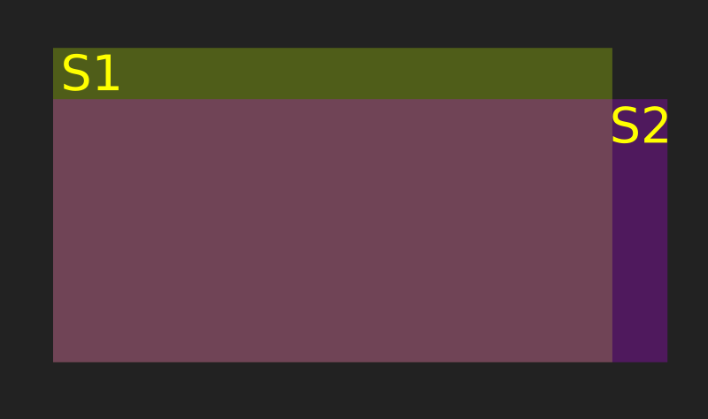
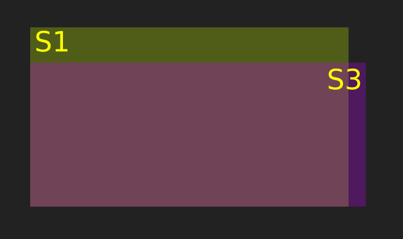
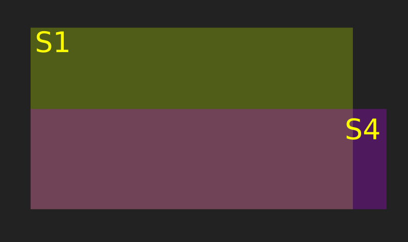
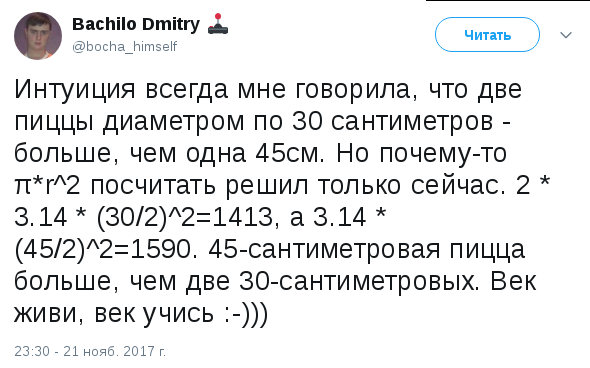

Про математический обман

Недавно моя хорошая подруга написала вот этот пост, в котором говорится о том, что многие люди не хотят считать, в том числе даже и свои средства, прикрываясь тем, что это для них сложно и вообще, они гуманитарии. Хотел бы продолжить данную тему и привести другие примеры.
Наш мозг обмануть несложно. Мозг ленив, он вообще не любит лишнюю работу и поэтому там, где считает это возможным, идёт по пути наименьшего сопротивления, чем и пользуются те же кредитные агенты и маркетологи. Пожалуй, самый наипримитивнейший способ, которым пытаются обмануть наш мозг - это ценники в магазинах. Все эти "9999" рублей, которые в представлении маркетологов на подсознательном уровне должны якобы сформировать представление о том, что цена товара не десять тысяч, а девять с чем-то. А это "что-то" видимо, следуя той же логике, должно восприниматься как нечто несущественное. Да, это самый примитивный пример и многие наверное думали об этом в ключе: "Да кто вообще на это клюёт? Это же очевидно!". Возможно, некоторым это казалось смешным в своей наивности.
Да, мы можем тихонько посмеяться над убогими, на ком срабатывают и такие нехитрые методы, мы-то сразу при подсчёте покупок округляем цены в бОльшую сторону, не правда ли? Но стОит сделать маааленький шажок в сторону, стоит чуть-чуть усложнить задачку, как сразу же мы клюём на удочку, стОит нам подсунуть нужную цифру. И жертвой вполне может стать человек, не считающий, что у него гуманитарный склад ума. Не смотря на то, что для успешного обхода большинства граблей хватит общего образования в рамках пяти классов школы. Но сначала про чуть более сложное, но тем не менее, очевидное на бытовом уровне вымогательство.
Статистика, азартные игры и эксперименты
Пример номер раз. Один мой товарищ (пусть молодой, но уже программист), решил заняться ставками на киберспорт и тратил на это из любопытства какие-то копейки вроде 10-20 рублей на ставку. Я посмотрел, домножил коэффициенты на профит, сложил, вычел из 100% и получилось, что контора себе оставляет "всего-навсего" 15%. Пятнадцать. Долбанных. Процентов. И это без учёта того, что за вывод своя отдельная комиссия! Для того, чтобы это понять, достаточно сделать шесть арифметических действий на калькуляторе. Если играть в ту же рулетку, например, то преимущество казино составит примерно 2,7 процента. На вопрос, не смущает ли его что-либо в этой ситуации, он запросто так ответил, что он же ставит не на равные события, а на событие с наиболее вероятным исходом, скажем, 90%, поэтому его шансы выигрыша выше в каждом конкретном случае, проигрывать он будет редко, а следовательно и в целом он останется в плюсе. Железная логика!
К моим доводам о том, что выигрывать он будет малые суммы, а проигрывать сразу крупные он первоначально отнёсся несколько скептически. Ладно, парню 19 лет. Предположим, он не знает теорию вероятности и не хочет её изучать. Но он, блин, программист. Можно потратить полчаса, написать три метода даже без классов, задать им на вход необходимые параметры и сэмулировать процесс просирания денег, ничем не рискуя. Что я, собственно, тогда и сделал, показав, что игра на равных шансах позволяет продержаться дольше в несколько раз против его стратегии, но так же убыточна, в случае ограниченного начального банка даже без грабительских 15% процентов, остающихся конторе.
Вообще, в России азартные игры официально запрещены законом с 2009-го года. Где-то оставлена пара открытых для этого зон, это можно видеть на иллюстрации в википедии, но на остальной территории это табу. Помню, когда ещё ходил в школу и университет, на остановках стояли игровые "лохоматы", в которые люди как зомби спускали монету за монетой. Слава богу, что это всё закрыто. Но... Азартные игры запрещены, а какие-нибудь букмекерские конторы цветут и пахнут. Не могу понять, в чём принципиальная разница между первыми и вторыми? Букмекерские конторы платят налоги? Так и казино с радостью их наверное платили. Всё-равно же деньги получают тем же нехитрым способом - из воздуха глупости граждан.
Помню, примерно в то же время, на втором курсе университета, мне очень понравилась математическая статистика, к тому же у меня чесались руки в отношении программирования и я искал сферу приложения этих самых рук. В то время мне понравилась математическая модель европейской рулетки. Скажу сразу, я не потратил на это ни копейки, но мне было интересно узнавать о методах игры, которые применяли различные люди. Банальная ли это была стратегия мартингейл с коэффициентами или Дональд-Натансон или ещё что поинтереснее - меня это почему-то жутко увлекало, а сама статистическая модель казалась очень стройной и красивой. Я собирал статистику появления серий различной длины, создавал супер-методы, запускающие десятки модифицированных мною методов в разных ситуациях, строил тысячи графиков, считал матожидание миллионы раз, писал очередные более оптимальные многопоточные эмуляторы, архивировал логи работы, оптимизировал их обработку. У меня была своя "маленькая bigdata". Кто-то играл в популярные тогда Sims, а я вот в это.
Тогда-то я и понял, что когда мы говорим о цифрах, то в действительности всё может быть совершенно не так очевидно, как нам кажется на первый, второй, третий и даже пятый взгляд. Для того, чтобы это понять - нужно взять в руки бумажку и калькулятор. Но для того, чтобы сделать это, нужно вообще заподозрить что-то неладное. Поэтому я часто начинаю что-то подозревать в подобных случаях просто авансом. Попытки манипуляций нашим сознанием с помощью цифр - это очень выгодно.
Про квадратики и прямоугольнички
Ещё один не всем очевидный пример. Помните, мониторы были с соотношением сторон 4:3? Да и экраны на первых смартфонах зачастую имели то же соотношение сторон. Много таких осталось? По отношению к общей массе - не очень. Сейчас больше популярны мониторы 16:9. Недавно телефоны перешли на формат 18:9 (то есть, один к двум). Активно в геймерской среде занимают свою нишу мониторы с соотношением сторон 21:9 и даже 32:9. Как вы думаете, почему?
Вот вам задачка: что имеет большую площадь экрана - монитор с диагональю в 24 дюйма или в 25 дюймов? Очевидно, второй. А если у первого сочетание сторон будет 16:9, а у второго - 21 к 9? Контрольный вопрос - а если бы вы не ждали подвоха, вы бы над этим вообще когда-нибудь задумались? Например, придя в магазин?
Итак, возвращаемся в третий или пятый (я уж не помню, какой точно) класс школы и решаем уравнение. Квадрат гипотенузы равен сумме квадратов катетов, помните? Гипотенуза и есть наша дигональ. Пусть "x", "y", "z" и прочие буквы - это некие наши условные единицы, а диагональ будем считать в дюймах, как есть. Зная длину диагонали и соотношения сторон, можем получить длины каждой из сторон.
(16x)^2 + (9x)^2 = 24^2
(21y)^2 + (9y)^2 = 25^2
256x^2 + 81x^2 = 576
441y^2 + 81y^2 = 625
x = (576/337)^1/2 = 1.7091^1/2 = 1.3073
y = (625/522)^1/2 = 1.1973 ^ 1/2 = 1.0942
Теперь у нас есть условные единицы и мы можем посчитать общую площадь. Элементарно же.
S1 = 16x * 9x = 246.1246 квадратных дюймов
S2 = 21y * 9y = 226.2931 квадртаных дюймов
Ой! Да как же так? Это на 25ти дюймовом мониторе уместится меньше полезной информации, чем на 24-х дюймовом? Так точно! И самое забавное, что разница эта нелинейна. Давайте примем площадь первого монитора за условные 100% и от этого будем плясать дальше. Тогда наш второй монитор имеет полезную площадь
226.2931 / 2.4612 = 91.9442%

Для наглядности вот вам иллюстрация. Возможно вы думаете, что купите монитор на дюйм больше, а на самом деле - на 8 с хвостиком процентов меньше. За что вы платите в магазине? Скорее всего за диагональ. А за что платит производитель? За площадь матрицы. Угадайте, и почему же сейчас чем шире монитор, тем он считается более стильным/модным/молодёжным игровым/дизайнерским? Исключительно из заботы о геймерах и дизайнерах наверное?
Давайте посмотрим, что будет, если взять третий монитор с соотношением 21:9, но диагональ пусть будет так же равна 24-м дюймам, как у первого:
(21z)^2 + (9z)^2 = 24^2
441z^2 + 81z^2 = 576
z = (576/522)^1/2 = 1.1034 ^ 1/2 = 1.050
S3 = 21z * 9z = 208.5425
208.5425 / 2.4612 = 84.7320%

А-та-та! Да что же это получается? Диагональ уменьшилась на 4.16 процентов, а полезная площадь - сразу на 7 с лишним процентов? Нас что, обманывают? Ну разве что чуть-чуть, но не в этом! Часто диагональ будет равна не 24 дюйма, а 23.8, например, на коробке же скромно округлят в бОльшую сторону. Просто вам дают те характеристики, которые вам ВЫГОДНО давать. В попугаях диагоналях то они больше.
Ну и на закуску давайте посчитаем площадь монитора с той же диагональю 24 дюйма и соотношением сторон 32:9.
(32n)^2 + (9n)^2 = 24^2
1024n^2 + 81n^2 = 576
n = (576/1105)^1/2 = 0.7219
S4 = 32n * 9n = 150 квадратных дюймов

Круто, правда? Нетрудно заметить, что чем ближе прямоугольник к квадрату, тем больше его площадь. Угадайте, чему будет равна площадь квадрата при диагонали в 24 дюйма? Догадались?
x^2 + x^2 = 24^2
2x^2 = 576
m = (576/2)^1/2 = 16.9705
S5 = m * m = 287.(9) = 288
Если 288 умножить на 2, то получится 576, то есть, диагональ в квадрате. Другими словами, максимальная площадь прямоугольника равна половине квадрата его диагонали и этот прямоугольник - квадрат. Задачка для третьего - пятого класса. Возможно вы скажете - "Но ведь контент...". А контент со временем станет таким, чтобы соответствовать мониторам и телефонам, которые вы радостно приобретёте. Маркетинг же в свою очередь постарается сделать всё, что в его силах, чтобы вы это сделали и чтобы после этого у вас во рту остался привкус лесных ягод. Помню, во времена существования четвёртого айфона, было шикарное видео о том, каким должен стать iPhone 5. Настоятельно рекомендую посмотреть, если вы ещё не видели, к тому же оно отлично иллюстрирует общую тенденцию изменения соотношения сторон.
Про кружочки
А вот вам ещё. Есть такой замечательный человек, как Дмитрий Бачило. Прекрасный айтишник, обладающий глубочайшими знаниями в своей области и просто замечательный человек. Очень советую подписаться на него везде, где только найдёте, особенно, на YouTube. Так вот, не смотря на все прекрасные вещи, которые он делает в рамках своего творчества, самым развирусившимся его постом оказался следующий:

Интересно, сколько ещё таких же математических ловушек, о самом существовании которых мы не догадываемся, щедро разбросано вокруг? Напишите, если знаете что-либо подобное, мне любопытно.
Теги: мысли-вслух, жизненное